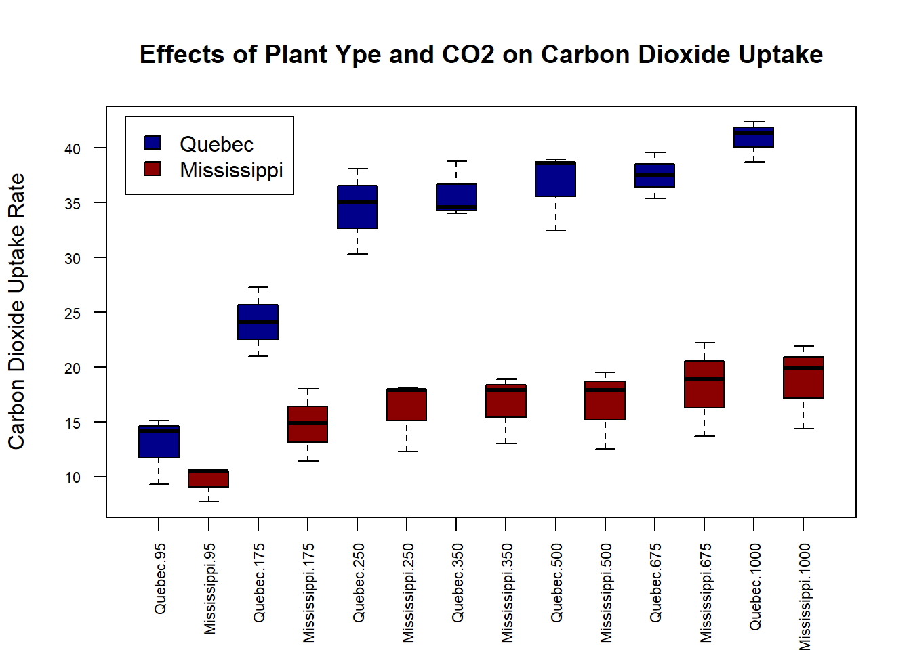

The CO2 data frame has 84 rows and 5 columns of data from an experiment on the cold tolerance of the grass species Echinochloa crus-galli.The \(CO_2\) uptake of six plants from Quebec and six plants from Mississippi was measured at several levels of ambient \(CO_2\) concentration. Half the plants of each type were chilled overnight before the experiment was conducted.
즉, 식물이 저온의 환경에서 견디는 정도를 실험한 데이터로 퀘벡 지역의 6개의 나무와 미시시피 지역의 6개 나무의 이산화 탄소 흡수율을 7개의 서로 다른 이산화 탄소 농도 하에서 반복적으로 측정했다.
2.1 Goals
분석의 편의를 위해 저온 처리된 나무에 한정하여 분석
두 지역간의 CO2흡수율의 차이를 검정
7개의 서로 다른 이산화탄소 농도에 따라서 이산화 탄소의 흡수율 차이를 검정
나무의 출신 지역과 이산화 탄소 흡수율 간의 관계가 이산화탄소 농도에 따라 달라지는 지도 검정
2.2 Data Description
Plant: plant id
Type: 나무의 출신 지역, 2개의 범주, 집단간 요인
Treatment: 퀘벡 지역 나무와 미시시피 지역 나무dp 각 각 절반씩 실험 전에 저온 처리 했음, 저온 처리 여부가 treatment 변수에 저장됨
boxplot(uptake~Type*conc,data=data,col=c("darkblue","darkred"),las=2,cex.axis=0.7,xlab="",ylab="Carbon Dioxide Uptake Rate",main="Effects of Plant Ype and CO2 on Carbon Dioxide Uptake")legend("topleft",inset=0.025, legend=c("Quebec","Mississippi"),fill=c("darkblue","darkred"))

2.6 One-Wway ANOVA
반복 측정 일원분산분석: y~W+Error(subject) where W= a within grouping variable, subject= a sample identifier
Error: Plant
Df Sum Sq Mean Sq F value Pr(>F)
Type 1 2667.2 2667.2 60.41 0.00148 **
Residuals 4 176.6 44.1
---
Signif. codes: 0 '***' 0.001 '**' 0.01 '*' 0.05 '.' 0.1 ' ' 1
Error: Within
Df Sum Sq Mean Sq F value Pr(>F)
Residuals 36 2013 55.93